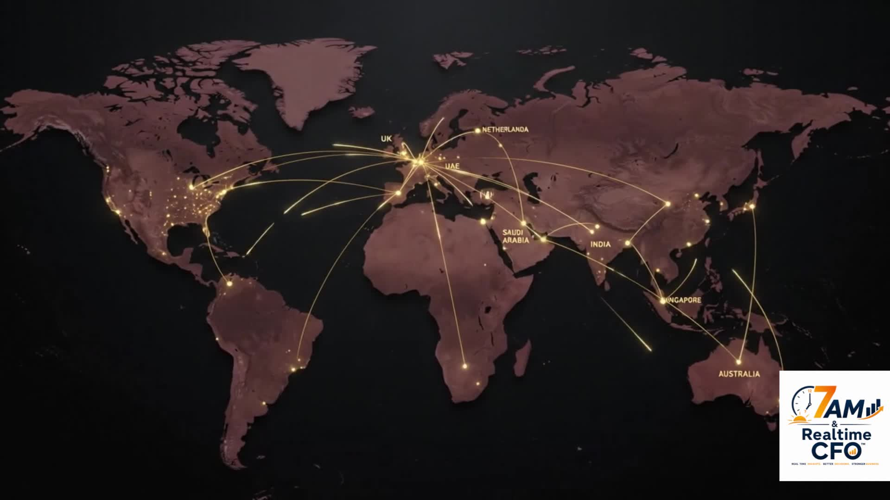

The same diagnostic lens we use before any engagement — before deciding whether the fix is an Excel model, a Power BI dashboard or an automated workflow. Answer 20 quick questions across Cash, Inventory, Costing and Controls — get your Top 3 Pain Points, free, in under 5 minutes.
Rate each statement 1–5 based on how true it is for your business today — 1 means "not done at all," 5 means "fully in place and systemized," whether that's inside Excel, an ERP, or a Power BI dashboard. There are no wrong answers, only where you actually stand.
At the end, you'll see your Finance Clarity Score and your Top 3 Pain Points — the exact gaps costing you time, cash or control right now.
Tell us where to show it — your Finance Clarity Score and Top 3 Pain Points unlock instantly below.
Want these gaps closed, not just measured — in Excel, Power BI or a full automation, whichever fits?
Talk to Us on WhatsApp →Want it personalized to your actual numbers? Get your free 5-Gap Financial Diagnostic Report →
Try the two free tools, built on the same Excel and Power BI logic used throughout this diagnostic — Cash vs Profit Leak Finder and Finance Clarity Diagnostic — no email required.
Explore Free Tools →Leave your details — we reply within one business day.
No spam. Prefer WhatsApp? DM "DEMO" to +91-7011283542.
Know a founder who needs this? Send them a Fin-vite — that's how most conversations here start.